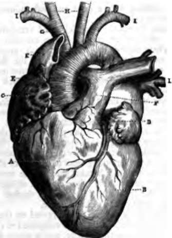

Organs Of The Circulation
Description
This section is from the book "Wonders Of The Human Body", by Auguste Le Pileur. Also available from Amazon: Wonders of the Human Body.
Organs Of The Circulation
The heart is a hollow muscular organ, nearly in the form of a cone, of which the base is equal to the height, and about the size of the fist in the adult It is situated towards the middle of the chest, a little to the left (fig. 24, p. 91), and between the pleurae, which contribute to form its covering. Its apex is directed downward, forward, and towards the left, at about the level of the fifth rib; its base looks upward, and slightly backward, and is protected by the sternum. Its anterior face, turned upward and to the right, is marked by a longitudinal furrow, as is also its posterior face, which is turned downward and to the left. Internally the heart is divided by a muscular partition into two nearly equal halves, placed back to back, and these are each again divided laterally into two cavities, the superior called the auricle, and the inferior the ventricle. The auricles take their name from a flattened appendage which falls down upon their external face. The right auricle communicates with the right ventricle, and the left auricle with the left ventricle. There is no communication between the ventricles, but before birth the two auricles communicate by an orifice, which - is obliterated during the first months of life, leaving as the only trace of its existence a depression called the fossa ovalis.
Fig. 26. Heart and principal arterial and venous trunks.
A. Right ventricle.
B. Left ventricle. c. Right auricle. d. Left auricle. e. Aorta.
F. Pulmonary artery.
G. Brachio-cephalic trunk.
H. Carotid, right and left. i, i. Subclavian arteries.
K. Superior vena cava. L. Pulmonary veins.
The superior and inferior vena cava open into the right auricle, and at the orifice of the latter is the Eustachian valve. The orifices of the right and left pulmonary veins are in the left auricle.
The opening by which the auricles and ventricles communicate with each other is called the auriculo-ventricular opening. These orifices are furnished with valves; that on the right is called the tricuspid valve, from the three angles which are formed by its leaves; and that on the left is called the mitral valve, from the slight resemblance which it bears to a bishop's mitre.
The cavities of the heart are lined by the endocardium, a very fine, smooth membrane, which has been compared to the serous membranes. These cavities present numerous inequalities, which result from the projection of the bundles of muscular fibre which point in every direction. In the ventricles these fascicles form fleshy columns (columnae carneae), disposed in a net-work running from one point of the walls to another, and several which take part in the movement of the valves, send out to these valves a crowd of little tendons. The walls of the left ventricle are much thicker and more resistant than those of the right ventricle.
Pericardium
This is the term applied to the covering which envelops the heart; it is a sac composed of two layers, a fibrous membrane on the outside, and a serous membrane on the inside. This last covers the external surface of the heart, and is reflected back upon itself in order to form, like all the membranes of this nature, a sac without an opening. The heart is thus covered by the pericardial sac, but not contained inside its cavity. A correct idea may be formed of the disposition of the pericardium around the heart by recalling a very common and very convenient, though now discarded head-dress, the cotton night-cap. The pericardium incloses the heart exactly as this cap covered our forefathers' heads.
Continue to:
- prev: Chapter IX. Circulation
- Table of Contents
- next: Arteries